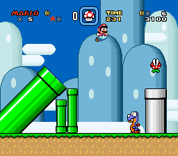
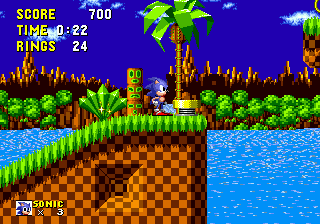
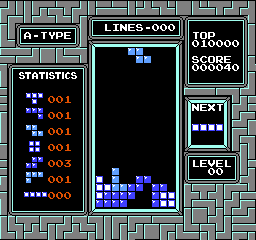

Super Mario Bros.
Prima ciupercă, primul salt, primul secret. O lecție de design care încă funcționează.
Intră în Mushroom KingdomO lume întreagă, în câțiva pixeli
Înainte de lumi uriașe și grafică realistă, existau un controller, câteva butoane și încă o încercare. Redescoperă jocurile care au făcut istorie.
8 și 16 biți. Idei simple. Distracție fără termen de expirare.

Selecția Retrocadia / 01
O săritură, un inel, o piesă potrivită. Uneori, atât îți trebuie.
Prima ciupercă, primul salt, primul secret. O lecție de design care încă funcționează.
Intră în Mushroom Kingdom
Dealuri verzi, bucle spectaculoase și inele aurii. Un alt fel de a explora un nivel.
Pornește prin Green Hill
Șapte forme și o regulă ușor de înțeles. Provocarea e să rămâi calm când ritmul crește.
Găsește piesa potrivităMai mult decât nostalgie / 02
Un joc retro nu este doar un joc vechi. Este o fereastră spre o perioadă în care memoria era limitată, iar ideile trebuiau să fie ingenioase.
Platforme pentru explorare, puzzle pentru răbdare sau lupte pentru competiție.
Începe cu mișcarea și acțiunea principală. Nu trebuie să știi totul din prima.
O viață pierdută e o informație câștigată. Observă, adaptează-te și revino.
Alege-ți aventura / 03
Un punct de pornire, în funcție de felul în care îți place să te joci.
| Dacă îți place… | Încearcă | Ce vei exersa |
|---|---|---|
| Să explorezi | The Legend of Zelda | Orientare și curiozitate |
| Să rezolvi puzzle-uri | Tetris | Planificare și reacție |
| Să treci obstacole | Super Mario World | Precizie și ritm |
| Să joci în doi | Street Fighter II | Distanță și sincronizare |
Press start
Console, controllere și câteva sfaturi pentru un început relaxat.